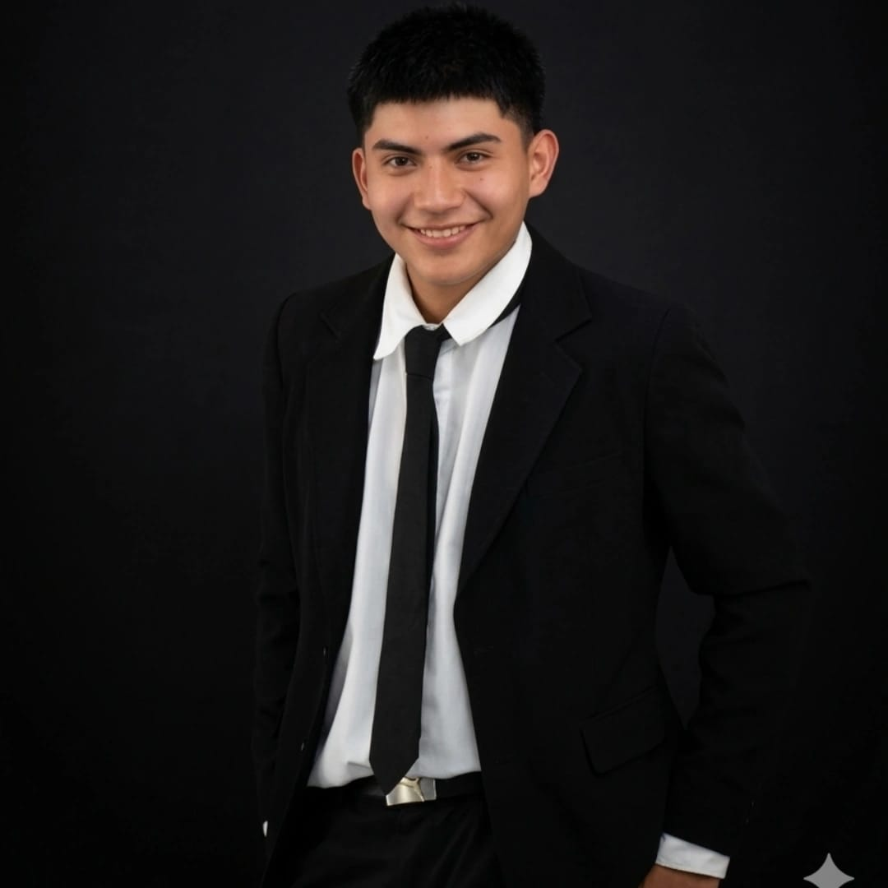

Gerar Guzmán
A veces, perderse entre las estrellas es la única manera de comprender lo pequeños que somos y lo extraordinario que significa estar vivos.
Sobre mí
Me considero una persona curiosa, analítica, observadora y con grandes aspiraciones de superación personal y profesional. Me caracterizo por mi facilidad para comunicar ideas, debatir, comprender diferentes perspectivas y encontrar soluciones ante distintas situaciones. Disfruto aprender cosas nuevas, relacionarme con las personas y explorar áreas como el marketing, los negocios, la tecnología y el liderazgo.
Ingresar a la universidad en 2027 para estudiar una carrera relacionada con el marketing, la administración o la tecnología, tambien me gustaria mejorar mi capacidad de expresión oral mediante la participación en debates, exposiciones y actividades académicas de la misma forma obtener más certificaciones en marketing digital, análisis de datos y gestión de proyectos durante mis primeros años de formación profesional.

Tecnologías
Herramientas y lenguajes de programación aprendidos durante mi formación académica en el programa Supérate Hilasal.
Backend & BaaS
Datos & BI
Primer año
Pip and Pop-karaoke
Un proyecto sencillo pero con mucho esfuerzo, el cual consiste en crear una lista de canciones basadas en el gusto del usuario, utilizando herramientas de programacion y tecnologicas basicas desde HTML hasta CSS conocimientos aprendidos en primer año, el proyecto esta basado en las caricaturas de "Pip and Pop" con el fin de ser un proyecto personal, dinamico y divertido.
Segundo año
HavenUp
HavenUp es una plataforma digital de vivienda asequible que conecta a propietarios con personas de bajos ingresos que buscan alquileres seguros y económicos a largo plazo. Su objetivo es facilitar la búsqueda, negociación y gestión de viviendas mediante contratos transparentes, pagos seguros y servicios complementarios como asesoría legal, seguros y mantenimiento. Su modelo de negocio se basa en tarifas de servicio, comisiones por alquileres exitosos, publicidad y alianzas con gobiernos locales. Además, beneficia a propietarios, inquilinos, abogados, agentes inmobiliarios y comunidades, promoviendo la estabilidad residencial, reduciendo la desigualdad en el acceso a la vivienda y permitiendo expandirse progresivamente a diferentes regiones.
Tercer año
Valtrust
ValTrust es un proyecto tecnológico enfocado en transformar la manera en que se realizan las valoraciones de bienes inmuebles mediante una plataforma digital que integra inteligencia artificial, aprendizaje automático y análisis automatizado de documentos. El sistema permite evaluar propiedades a partir de información legal, características del inmueble y datos del mercado inmobiliario, generando rangos de precios más precisos y confiables. Además, ofrece herramientas para publicar propiedades, consultar análisis del mercado y aumentar la visibilidad de los inmuebles mediante diferentes planes de servicio. El proyecto busca brindar transparencia, seguridad y confianza en los procesos de compra y venta de propiedades, facilitando la toma de decisiones tanto para usuarios locales como para salvadoreños que residen en el extranjero y desean invertir en el país.
Certificaciones
Diplomas y Cursos que he completado para desarrollar mis habilidades y conocimientos para mi futura educación avanzada en universidad.
Comunicación Asertiva
Obtenido en el programa Platzi que valida los conocimientos en comunicación asertiva.
Estrategias Empresariales
Obtenido en el programa Platzi que valida los conocimientos en estrategias empresariales.
Terminos-Marketing Digital
Obtenido en el programa Platzi que valida los conocimientos en marketing digital.
Contacto
Contactos a través de los siguientes medios: